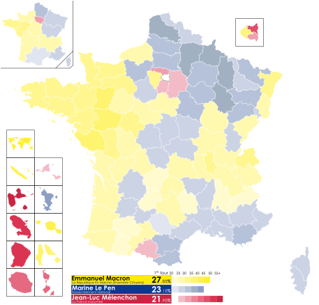
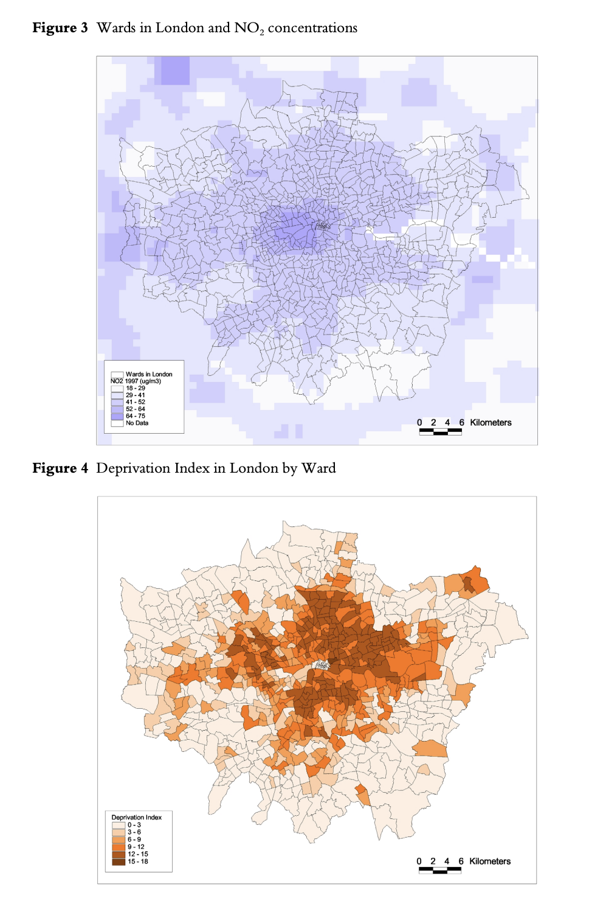
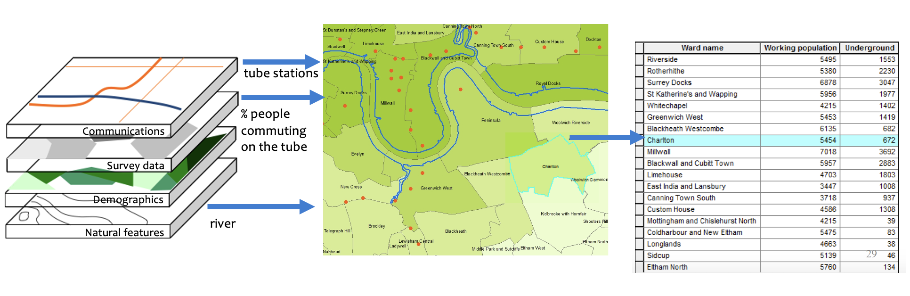
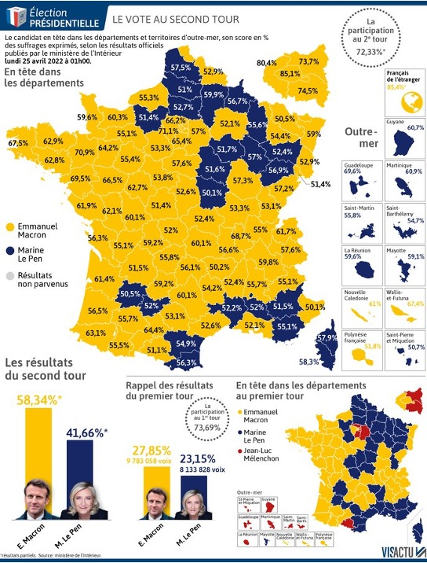

Code
# Logique (booléen)
class(TRUE)
# Caractère (chaîne de texte)
class("Je suis une ville")
# Numérique
class(2021)
# Facteur (catégories ordonnées)
class(as.factor(c("rural", "urbain", "périurbain")))
# Valeur manquante
c(NA, 1, 2, NA)
Ce cours est structuré en deux jours et trois modalités complémentaires :
Le fil conducteur est géographique : Londres pour les démonstrations, Paris et la Corse pour les exercices. Les données utilisées tout au long du cours sont des données ouvertes réelles — transactions immobilières, annonces Airbnb, MNT SRTM, données GPW de population.
Ce cours propose un aperçu général des nombreuses méthodes et techniques disponibles pour exploiter les données spatiales. L’accent est mis sur :
Le statisticien George Box disait : “Tous les modèles sont faux, mais certains sont utiles.”
De la même façon, le géographe Keith Ord suggère : “Toutes les cartes sont fausses, mais certaines sont utiles.”
L’information géographique joue un rôle crucial dans nos sociétés modernes. Elle intervient dans des domaines aussi variés que le logement, le transport, l’assurance, la banque, les télécommunications, la logistique, l’énergie, le commerce de détail, l’agriculture, la santé et l’urbanisme.
Travailler avec des SIG permet de :
La cartographie est un outil puissant pour comprendre les phénomènes sociaux et politiques. La carte ci-dessous illustre les résultats du second tour de l’élection présidentielle française de 2022, département par département.

Ce type de carte — une choroplèthe — colorie chaque unité géographique selon la valeur d’une variable. Elle rend immédiatement lisible une distribution spatiale qui serait opaque sous forme de tableau.
Faire des cartes pour comprendre des tendances sociales Élections, inégalités, phénomènes naturels — la carte reste l’un des outils les plus intuitifs pour communiquer et analyser des phénomènes géographiques.
Sélectionner des données selon des critères spatiaux
Transformer et réagréger des données
Répondre à des questions causales
Sélectionner un site
Les niveaux de polluants locaux (NO₂ + PM10) peuvent être élevés dans certaines régions, avec des effets néfastes sur la santé humaine.
Question de recherche : Les personnes vivant dans des zones très défavorisées sont-elles exposées de manière disproportionnée à des niveaux de pollution plus élevés ?
Le SIG permet ici de rassembler différents types de données dans un système à référence spatiale commune — données de NO₂ collectées à partir de la localisation des routes et des usines, indice de privation par quartier (LSOA, ward, code postal) — puis de les superposer pour tester l’hypothèse.

Référence : King and Stedman (2000), “Analysis of Air Pollution and Social Deprivation”
Il existe une distinction importante entre les approches :
| Approche | Description |
|---|---|
| SIG classique | Production de cartes et produits analytiques via un logiciel de bureau (ex. QGIS, ArcGIS) |
| Geographic Data Science | Écriture de code et pipelines produisant des représentations cartographiques et analytiques reproductibles |
Ce cours adopte une approche Geographic Data Science : vous écrirez du code, construirez des pipelines, et produirez des résultats reproductibles.
Un SIG intègre des couches d’information hétérogènes géoréférencées. Le principe fondamental est la superposition de couches (layers) : chaque couche représente un thème ou une variable, et l’analyse consiste à les combiner.

Les couches typiques incluent :
Les données vectorielles représentent les entités géographiques sous forme de points, lignes et polygones, chacune associée à une table attributaire.

Les trois types géométriques :
| Géométrie | Exemples |
|---|---|
| Point | Stations, adresses, relevés de mesure |
| Ligne | Routes, rivières, réseaux |
| Polygone | Quartiers, communes, parcelles |
Les données raster représentent l’espace sous forme d’une grille régulière de pixels. Chaque cellule contient une valeur unique (continue ou catégorielle).
Caractéristiques :
Utilisez le vecteur pour des entités discrètes avec des frontières nettes (quartiers, routes, bâtiments).
Utilisez le raster pour des phénomènes continus dans l’espace (température, altitude, densité).
| Format | Extension | Description |
|---|---|---|
| Geopackage | .gpkg |
Open Source · OGC standard · Un seul fichier · Plusieurs couches · Recommandé |
| Shapefile | .shp |
Standard ESRI · Multi-fichiers · Limité à 2 Go |
| GeoJSON | .geojson |
Format texte · Basé sur JSON · Idéal pour le web et les APIs |
| Raster | .tif, .img… |
Format grille (image) |
| Tables | .csv, .txt, .xlsx |
Tableurs avec colonnes de coordonnées |
.shp, .dbf, .shx, .prj…) — ne jamais envoyer uniquement le .shp !Préférez le GeoPackage (.gpkg) pour les nouveaux projets.
Plusieurs outils permettent de travailler avec des données spatiales. Ce cours utilise R + RStudio parmi d’autres options :
R se distingue par :
tidyverse)sf, terra, gstat, exactextractr…)reticulate)ggplot2 — le même outil pour les cartes et les graphiquesRStudio est un IDE (Integrated Development Environment) qui organise le travail en quatre panneaux :
| Panneau | Rôle |
|---|---|
| Scripts / Quarto | Écrire et sauvegarder les commandes |
| Console | Exécuter du code et voir les résultats |
| Environnement | Variables et objets chargés en mémoire |
| Fichiers / Plots / Packages / Aide | Navigation et visualisation |
Quarto (successeur de R Markdown) permet de mélanger code, texte et graphiques pour produire :
En R, tout est un objet. Les principaux types sont :
# Logique (booléen)
class(TRUE)
# Caractère (chaîne de texte)
class("Je suis une ville")
# Numérique
class(2021)
# Facteur (catégories ordonnées)
class(as.factor(c("rural", "urbain", "périurbain")))
# Valeur manquante
c(NA, 1, 2, NA)Un data frame est une structure tabulaire à deux dimensions :
# Accès par position [ligne, colonne]
dat[1, ] # première ligne
dat[, 1] # première colonne
dat[6, 3] # 6e ligne, 3e colonne
# Accès par nom de colonne
dat$population
# Filtrage conditionnel
dat[dat$population > 10000, ]
# Explorer la structure
str(mon_dataframe)
summary(mon_dataframe)Les packages sont au cœur de R. Les principaux packages spatiaux que nous utiliserons :
# Installer (une seule fois)
install.packages(c(
"sf", # données vectorielles
"spData", # jeux de données géographiques d'exemple
"terra", # données raster
"stars", # données raster multi-dimensionnelles
"tidyterra", # terra + ggplot2
"ggplot2", # visualisation — outil principal du cours
"patchwork", # assembler plusieurs graphiques
"dplyr", # manipulation de données
"classInt", # classification choroplèthe
"viridis", # palettes perceptuellement uniformes
"RColorBrewer", # palettes ColorBrewer
"scales", # formatage axes et légendes
"ggspatial", # flèche nord et barre d'échelle
"rnaturalearth", # données géographiques mondiales
"rnaturalearthdata", # données Natural Earth
"maps", # données cartographiques de base
"spdep", # poids spatiaux et voisinage
"gstat", # interpolation IDW
"exactextractr", # statistiques zonales raster → polygones
"leaflet", # cartes interactives
"mapsf" # cartographie thématique (illustré brièvement)
))
# Charger (à chaque session)
library(sf)
library(ggplot2)
library(dplyr)Suivez #rstats sur les réseaux sociaux ou consultez r-spatial.org pour les actualités des packages spatiaux.
|>Le pipe est un opérateur qui passe le résultat d’une expression à la suivante. Il permet d’enchaîner des opérations sans créer d’objets intermédiaires, ce qui rend le code beaucoup plus lisible.
# Sans pipe — difficile à lire, on lit de l'intérieur vers l'extérieur
head(filter(select(mon_df, nom, prix), prix > 100), 5)
# Avec pipe |> — on lit de gauche à droite, étape par étape
mon_df |>
select(nom, prix) |>
filter(prix > 100) |>
head(5)|> vs %>%
Vous verrez les deux dans des codes R existants. Ils font essentiellement la même chose :
| Opérateur | Origine | Usage |
|---|---|---|
|> |
R natif (depuis R 4.1) | Recommandé — aucun package requis |
%>% |
Package magrittr / dplyr |
Très répandu dans les anciens scripts |
Dans ce cours nous utilisons |> partout.
ggplot2ggplot2 repose sur une grammaire des graphiques (grammar of graphics) : chaque carte ou graphique est construit couche par couche avec +.
ggplot(data = mon_sf) + # 1. données de base
geom_sf(aes(fill = ma_variable)) + # 2. géométrie + mapping esthétique
scale_fill_viridis_c(name = "Légende") + # 3. échelle de couleur
labs(title = "Titre", caption = "...") + # 4. étiquettes
theme_void() # 5. thème (fond, axes…)Les éléments clés :
| Élément | Rôle | Exemple |
|---|---|---|
ggplot() |
Initialiser le graphique | ggplot(data = france) |
geom_*() |
Choisir la forme visuelle | geom_sf(), geom_histogram(), geom_point() |
aes() |
Lier une variable à une esthétique | aes(fill = chomage) |
scale_*() |
Contrôler couleurs, axes, légende | scale_fill_viridis_c() |
labs() |
Ajouter titres et sources | labs(title = "...", caption = "...") |
theme_*() |
Contrôler l’apparence générale | theme_void(), theme_minimal() |
+ |
Ajouter une couche | Toujours +, jamais |> |
ggplot2 pour les cartes ET les graphiques
C’est le choix central de ce cours : la même syntaxe sert à produire des histogrammes, des nuages de points, et des cartes choroplèthes. Apprendre une grammaire suffit pour tout visualiser.
# Histogramme
ggplot(mon_df, aes(x = prix)) + geom_histogram()
# Nuage de points
ggplot(mon_df, aes(x = superficie, y = prix)) + geom_point()
# Carte choroplèthe
ggplot(mon_sf) + geom_sf(aes(fill = prix))cut() : (, [, ], )Lorsque vous classifiez une variable continue avec cut() — pour créer des classes sur une carte choroplèthe — R affiche les bornes avec des crochets qui viennent des notations mathématiques des intervalles :
| Symbole | Signification | Exemple |
|---|---|---|
( |
borne exclue (ouverte) | (10, 20] : strictement supérieur à 10 |
[ |
borne incluse (fermée) | [10, 20) : supérieur ou égal à 10 |
] |
borne incluse | (10, 20] : inférieur ou égal à 20 |
) |
borne exclue | [10, 20) : strictement inférieur à 20 |
Donc (4.5, 7.1] signifie : “valeurs strictement supérieures à 4,5 et inférieures ou égales à 7,1”.
Ce cours utilise une fonction utilitaire pour remplacer automatiquement ces notations par des labels lisibles du type 4.5 – 7.1 :
# Fonction à copier dans vos scripts
clean_cut_labels <- function(x) {
levels(x) <- gsub("\\(|\\[|\\]|\\)", "", levels(x)) |>
gsub(",", " – ", x = _)
x
}
# Utilisation
ma_variable_classee <- cut(mon_vecteur,
breaks = mes_bornes,
include.lowest = TRUE,
dig.lab = 4,
ordered_result = TRUE) |>
clean_cut_labels()Ce cours est organisé en quatre sections, accompagnées de leurs corrigés.
Section 1 — Les fondamentaux
| Chapitre | Contenu | Corrigé |
|---|---|---|
| Objets spatiaux | Types géométriques, objets sf, premières cartes |
|
| Choroplèthes | Classification, palettes, méthodes de discrétisation | France |
| Systèmes de coordonnées | SCR, projections, reprojection |
Section 2 — Raster
| Chapitre | Contenu | Corrigé |
|---|---|---|
| Données raster | Introduction aux MNT, packages terra et stars |
|
| Relief du Liban | Reprojection, recadrage, pente, reclassification, extraction, statistiques zonales | Corse |
Section 3 — Géotraitement
| Chapitre | Contenu | Corrigé |
|---|---|---|
| Géotraitement — Londres | Jointures spatiales, zones tampons, distance | Paris |
| Interpolation spatiale | IDW, heatmaps — Londres | Paris Airbnb |
Section 4 — Cartographie interactive
| Chapitre | Contenu | Corrigé |
|---|---|---|
| Cartes interactives avec Leaflet | Fonds de carte ouverts, marqueurs, choroplèthes interactives, API | |
| Leaflet : privation à Londres | Carte à plusieurs couches, légendes, contrôle des couches | Paris |
Commençons par les fondamentaux : importer des données spatiales, les manipuler, et produire nos premières cartes avec R.
Dr. Elisabetta Pietrostefani — Directrice Adjointe, Geographic Data Science Lab — Université de Liverpool | Co-Directrice, Imago : Data Service for Imagery | Chercheuse Associée, London School of Economics